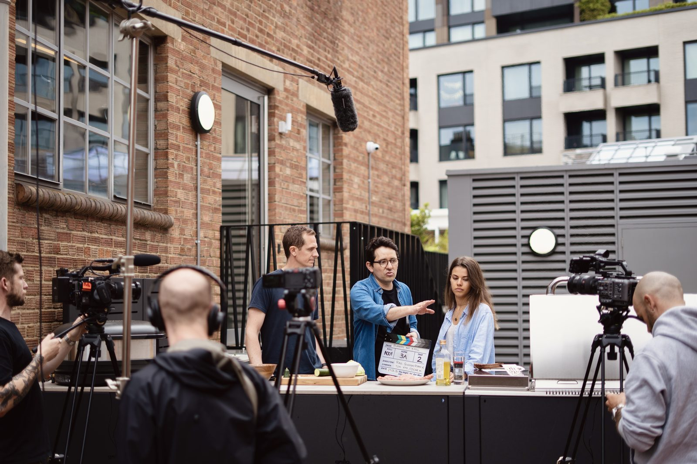
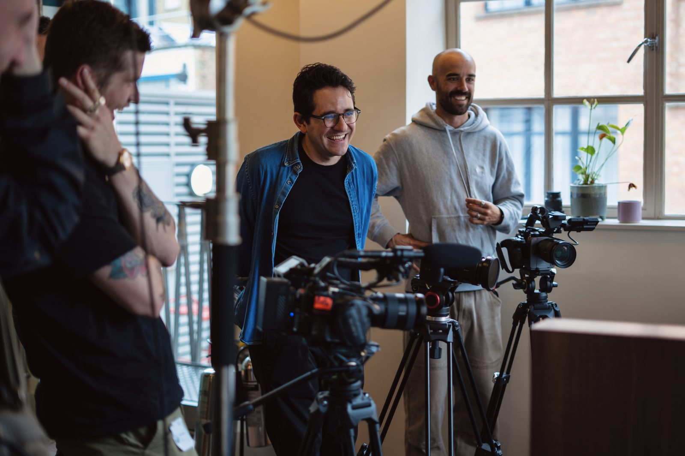

I grew up surrounded by magical realism, in a place where a beach vendor can pack the sun into his bag without the sky or anyone around him noticing. That is what I chase with storytelling: the moment the ordinary becomes something people feel. For more than 14 years I have told stories in whatever medium the story asks for: editorial, narrative, brand films, animation, podcasts, photography. I capture and edit to take the audience through my lens. Now, as Head of Creative AI, I use emerging technology not to replace the medium but to enhance it: prototyping faster and making the creative process sharper. Editor first. Storyteller always.

